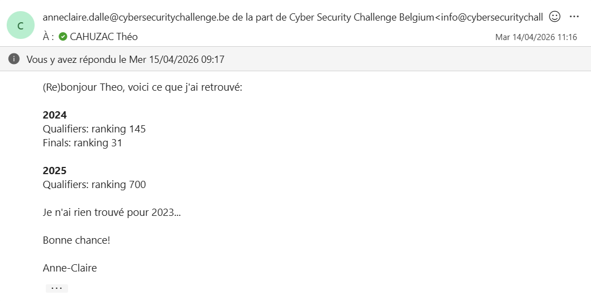

Le Cyber Security Challenge Belgium est une compétition nationale de cybersécurité organisée chaque année et ouverte aux étudiants belges. Le format est celui d'un CTF (Capture The Flag) où les participants doivent résoudre des challenges techniques pour trouver un "flag", une chaîne de caractères cachée qui valide la réussite du défi. Les challenges couvrent de nombreux domaines : cryptographie, exploitation web, forensics, reverse engineering, réseau, etc.
Cette compétition m'a fait découvrir l'univers des "capture the flag". Ainsi que les thèmes lié aux compétitions de ce type : analyse de paquets réseau, identification de vulnérabilités web, anipulation de fichiers binaires.
J'ai particulièrement apprécié ma participation au Cyber Security Challenge, car cela m'a permis de toucher à de nombreux domaines que je n'avais pas encore pu explorer.
Mon principal regret est de ne pas avoir eu suffisamment de temps pour explorer tous les challenges. Certains étaient hors de ma portée actuelle, ce qui m'a donné des objectifs concrets d'apprentissage : approfondir la cryptographie et le reverse engineering. Cette expérience m'a également montré l'importance de travailler en équipe dans ce domaine, chaque membre apportant des compétences complémentaires.
En lien avec mon projet professionnel orienté réseau et infrastructure, la cybersécurité est une compétence transversale indispensable. Un administrateur réseau qui comprend les vecteurs d'attaque est bien plus efficace pour concevoir des architectures robustes.

⬅ Retour